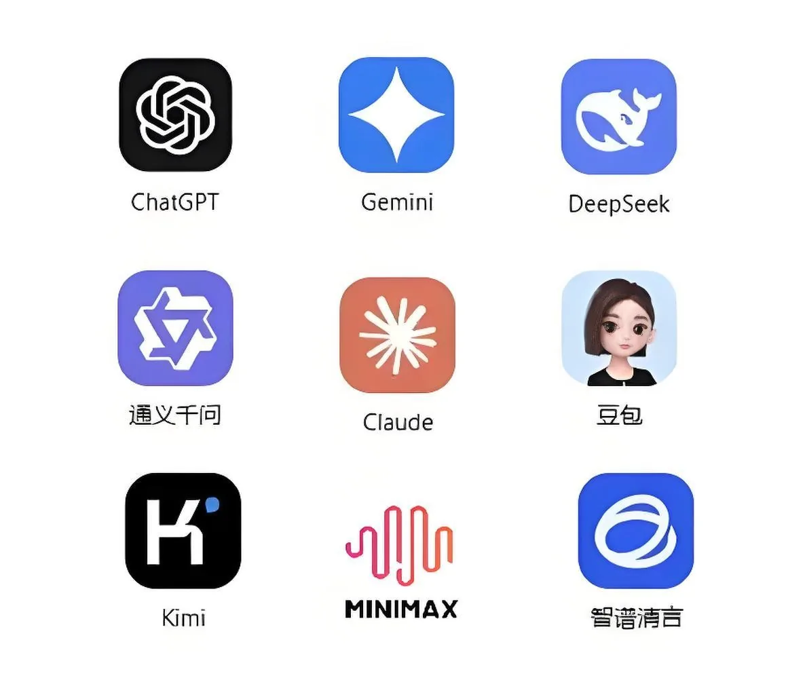

MaaS Platform
FlexiCore OmniMarket 大模型 MaaS 平台
一站式接入全球主流大模型，一個 API Key 調用所有模型，低延遲、高併發、合規穩定、按量計費。
平台概述
Omni 是香港九寬科技打造的一站式大模型 MaaS 接入平台。我們整合了全球頂尖的 AI 模型供應商，讓企業開發者可以通過統一的 API 接口，輕鬆調用多種大模型的能力，無需分別對接和維護，極大地降低了 AI 應用開發的門檻和成本。
多模型合一
低延遲
按量計費
合規穩定
Models
支持主流大模型
一個平台，覆蓋國內外主流大模型供應商。

- OpenAI 系列：GPT-4、GPT-3.5 Turbo 等
- Anthropic 系列：Claude 3 Opus、Sonnet、Haiku 等
- Google 系列：Gemini 系列模型
- 國內主流模型：DeepSeek、豆包、千問等
Model Matrix
模型能力對比矩陣
不同模型各有所長，按業務場景精準選型。
| 模型 | 上下文窗口 | 核心能力 | 適用場景 |
|---|---|---|---|
| GPT-4o | 128K | 多模態 · 複雜推理 · 代碼 | 通用對話、複雜推理、代碼生成 |
| Claude 3.5 Sonnet | 200K | 長文本 · 分析 · 寫作 | 文檔分析、內容創作、客服 |
| Gemini 1.5 Pro | 1M+ | 超長上下文 · 多模態 | 視頻理解、長文檔處理 |
| DeepSeek-V3 | 64K | 數學推理 · 代碼 | 代碼生成、數學計算、邏輯推理 |
| 豆包 Pro | 128K | 中文理解 · 性價比 | 中文客服、內容生成、翻譯 |
| 通義千問 | 128K | 多模態 · 中文 · RAG | 中文場景、企業知識庫問答 |
Use Cases
典型應用場景
從智能客服到 RAG 知識庫，一個 API Key 覆蓋全場景 AI 需求。
智能客服
24/7 多輪對話，意圖識別 + 知識庫 RAG，大幅降低人工成本。
內容生成
營銷文案、報告摘要、多語言翻譯，批量生成高質量內容。
代碼輔助
代碼生成、Code Review、Bug 定位，提升研發效率 30%+。
數據分析
自然語言查詢數據、自動生成報表與可視化圖表。
RAG 知識庫
企業文檔向量化 + 檢索增強生成，構建私有智能問答系統。
多模態應用
圖文理解、OCR 識別、視頻內容分析，拓展 AI 感知邊界。
Technical Features
平台技術特性
開箱即用的企業級 API 能力，降低開發複雜度。
流式響應 (SSE)
Server-Sent Events 實時流式輸出，首字延遲低至 200ms。Function Calling
原生支持函數調用，輕鬆接入外部 API 與工具鏈。多模態輸入
支持圖片、PDF、文檔等多模態輸入，視覺理解能力。Embedding 向量
文本向量化接口，支撐語義搜索與 RAG 檢索場景。
JSON Mode
流式輸出
Vision 圖像理解
Function Calling
Embedding 向量
多輪對話
長上下文
多模態
Quick Start
API 快速接入示例
統一接口格式，只需替換模型名稱即可切換調用。
cURL
# 調用 Chat Completions（兼容 OpenAI 格式）
curl https://api.omni.jkthc.com/v1/chat/completions \
-H "Content-Type: application/json" \
-H "Authorization: Bearer YOUR_API_KEY" \
-d '{
"model": "claude-3-5-sonnet",
"messages": [
{"role": "user", "content": "你好，請介紹一下你自己"}
],
"stream": true
}'Python
from openai import OpenAI
client = OpenAI(
api_key="YOUR_API_KEY",
base_url="https://api.omni.jkthc.com/v1"
)
response = client.chat.completions.create(
model="gpt-4o", # 一行切換模型
messages=[{"role": "user", "content": "用 Python 寫一個快速排序"}],
stream=True
)
for chunk in response:
print(chunk.choices[0].delta.content, end="")接口完全兼容 OpenAI SDK，現有代碼只需修改 base_url 和 api_key 即可無縫遷移。
Why Omni
平台核心優勢
降低接入門檻，讓企業專注 AI 應用本身。
一站式接入
一個 API Key，即可調用所有模型，免去多頭對接維護。低延遲高併發
香港節點直連，保障服務質量與響應速度。按量計費
靈活付費，無前期投入，用多少算多少。合規穩定
數據傳輸與使用符合全球法規，正規可靠。Onboarding
API 接入流程
四步快速上線，最快當天完成接入。
①
註冊開通
聯繫商務開通平台賬號，獲取專屬 API Key。
②
選擇模型
按業務場景挑選適配的大模型，配置調用額度。
③
對接聯調
統一接口文檔，技術團隊協助對接與聯調。
④
上線計費
正式上線，按實際調用量計費，持續優化成本與體驗。